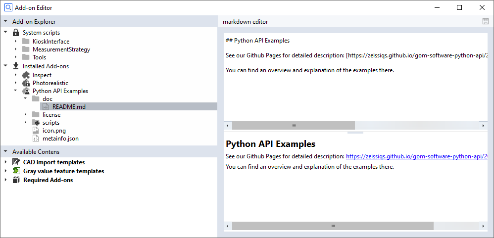
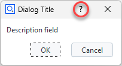
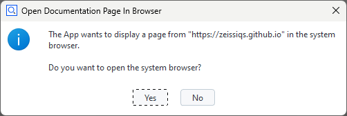

Documenting Apps
Note
The App documentation is part of the packaged App.
Terminology
Item |
Description |
Origin |
|---|---|---|
Title |
App title |
‘Title’ field in the App properties/ |
One-Liner |
App short description, a single line |
‘Description’ field in the App properties/ |
Short description |
App short description |
|
Long description |
App long description |
|
Documentation |
Documentation as PDF (optional) |
|
Releasenotes |
Releasenotes as PDF |
|
App category |
App category (optional) |
|
Versions |
Main software / App version |
|
Compatible software |
Compatible main software product(s) |
|
Rendering in the ZEISS Quality Software Store
ZEISS Quality Software Store – Product overview
ZEISS Quality Software Store – Product details
App documentation structure
Caution
App short / long descriptions can only be rendered as plain text without formatting in the ZEISS Quality Software Store.
Note
An App (.addon file) is technically a ZIP file. See App file format for details.
Mandatory contents:
doc/README.md— App short / long descriptiondoc/Releasenotes.md/.pdf— The Markdown file allows viewing in the App Editor while the PDF file is used in the ZEISS Quality Software Store.
Optional contents:
doc/Documentation.md/.pdf— Extended App documentation / user manualdoc/...— any number of additional files
Example
Source: doc/README.md
# Airfoil Inspection
Contains relevant functions to inspect airfoils. The app also supports the acquisition and preparation of optical and tactile measurement data. The industry-specific
Airfoil Inspection workspace is optimized for analyzing airfoils, such as blades, vanes or blisks.
The Airfoil Inspection App provides functions to prepare your measured data, no matter if tactile or optical, and to analyze airfoils, such as blades, vanes or blisks.
In addition, the App also provides the Smart Teach functionality for profile edge points, to measure airfoils in a dedicated way.
Further functionality provided by Airfoil Inspection:
- specific Airfoil workspaces
- import and processing of tactile measured curves (incl. stylus sphere radius correction)
- interface to CALYPSO for data acquisition
- advanced Airfoil functionalities for profile inspection
- industry specific Apps
- Efficient Blisk Measurement and Inspection
- Airfoil Bow and Sweep Inspection
- Virtual Balancing
- Throat Area - together with Local Minimal Surface
Want to know more? Check the related articles in the ZEISS Quality Tech Guide.
Short description
Contains relevant functions to inspect airfoils. The app also supports the acquisition and preparation of optical and tactile measurement data. The industry-specific Airfoil Inspection workspace is optimized for analyzing airfoils, such as blades, vanes or blisks.
Long description
The Airfoil Inspection App provides functions to prepare your measured data, no matter if tactile or optical, and to analyze airfoils, such as blades, vanes or blisks. In addition, the App also provides the Smart Teach functionality for profile edge points, to measure airfoils in a dedicated way.
Further functionality provided by Airfoil Inspection:
specific Airfoil workspaces
import and processing of tactile measured curves (incl. stylus sphere radius correction)
interface to CALYPSO for data acquisition
advanced Airfoil functionalities for profile inspection
industry specific Apps
Efficient Blisk Measurement and Inspection
Airfoil Bow and Sweep Inspection
Virtual Balancing
Throat Area - together with Local Minimal Surface
Want to know more? Check the related articles in the ZEISS Quality Tech Guide.
Markdown
Caution
App short / long descriptions can only be rendered as plain text without formatting in the ZEISS Quality Software Store.
Note
See markdown guide for a brief description of the markdown format.
See ZEISS Quality Software Store — FileSelectionAndFiltering for example.
 A markdown editor/viewer is integrated in the ZEISS INSPECT App editor.
Converting Markdown files to Portable Document Format (PDF)
The Visual Studio Code extension Markdown PDF allows to convert Markdown files to PDF. The ZEISS App Development Environment converts Releasenotes from Markdown to PDF automatically.
Link to external documentation
You can create a link to a website providing App documentation by adding a JSON object "documentation": "<url>" to the App’s metainfo.json file:
metainfo.json{
...
"documentation": "https://zeissiqs.github.io/zeiss-inspect-addon-api/2025/index.html",
...
}
If a documentation link is defined in an App, each dialog window will provide a help button in its title bar.

When the help button is clicked, the user must confirm that the linked documentation pages is openened in the system’s web browser.
